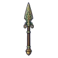
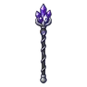
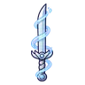
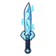
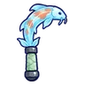
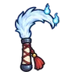

หนังสือบิน · ร่างปกทอง
มอนธาตุวิญญาณ Lv 84–88
เจอที่
| แมพ | โซน | Lv | ภูมิภาค |
|---|---|---|---|
| หอบัญชีใต้วิหาร ชั้น 2 · ห้องบัญชี | 84–88 | เมืองหอระฆัง |
ค่าสถานะตามเลเวล
| Lv | HP | ATK | DEF | MDEF | EXP | Job |
|---|---|---|---|---|---|---|
| 84 | 81,811 | 251–376 | 28 | 33 | 222 | 167 |
| 86 | 87,721 | 258–388 | 29 | 34 | 226 | 170 |
| 88 | 93,939 | 267–399 | 30 | 34 | 231 | 173 |
ตีด้วยธาตุไหนดี
แรงขึ้น: วิญญาณ ×1.25
เบาลง: ไม่มีธาตุ ×0.25
วัตถุดิบที่ดรอป
| ของ | โอกาส | |
|---|---|---|
| หน้ากระดาษเรืองแสง | 82.5% | 1 ชิ้น (15% ได้ 2) |
อุปกรณ์ที่ดรอป (9)
| ของ | โอกาส |
|---|---|
 หอกบรอนซ์โบราณ | 0.25% |
 คทาอเมทิสต์เงิน | 0.25% |
| ชุดนักเดินทางใต้แสงจันทร์ (เสื้อ) | 0.15% |
| ชุดนักเดินทางใต้แสงจันทร์ (กางเกง + รองเท้า) | 0.15% |
 ดาบคู่ริบบิ้นวิญญาณ | 0.06% |
 ดาบคู่มือภูตวิญญาณ | 0.06% |
 เคียวคู่ปลาคาร์ปวิญญาณ | 0.06% |
 เคียวคู่หางจิ้งจอกวิญญาณ | 0.06% |
| ชุดนักเดินทางใต้แสงจันทร์ (ตะเกียงจันทร์จิ๋ว) | 0.05% |
สกิล
ม่านเวท (Lv 25+) · ม่านเวท (Lv 60+) · ยิงกระจาย (Lv 60+)